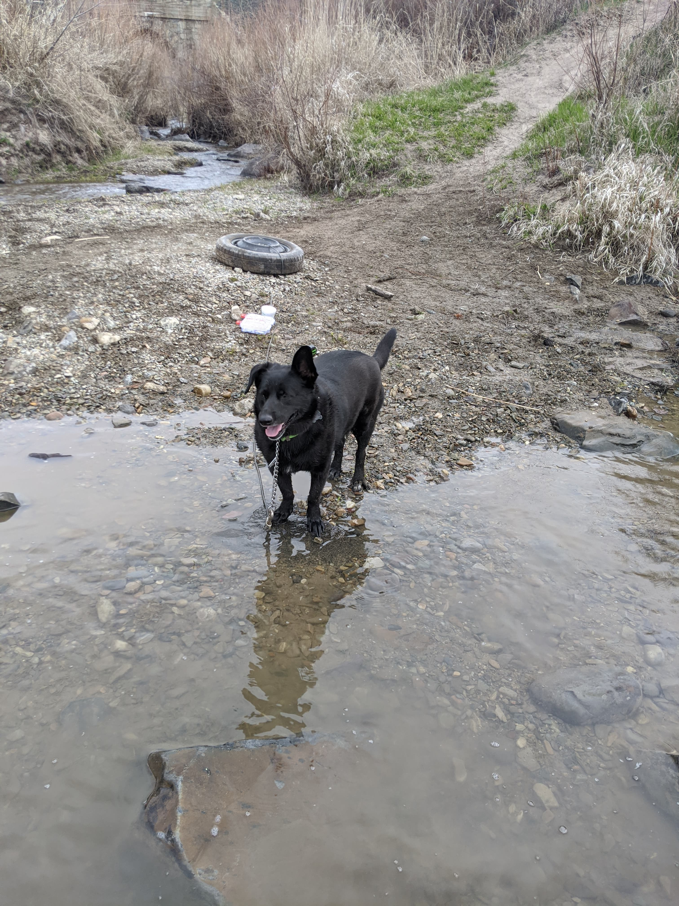

Services Offered
Let us pamper your fur babies!
The quick, brown fox jumps over a lazy dog. DJs flock by when MTV ax quiz prog. Junk MTV quiz graced by fox whelps. Bawds jog, flick quartz, vex nymphs. Waltz, bad nymph, for quick jigs vex! Fox nymphs grab quick-jived waltz. Brick quiz whangs jumpy veldt fox. Bright vixens jump; dozy fowl quack. Quick wafting zephyrs vex bold Jim. Quick zephyrs blow, vexing daft Jim. Sex-charged fop blew my junk TV quiz. How quickly daft jumping zebras vex. Two driven jocks help fax my big quiz. Quick, Baz, get my woven flax jodhpurs! "Now fax quiz Jack!" my brave ghost pled. Five quacking zephyrs jolt my wax bed. Flummoxed by job, kvetching W. zaps Iraq. Cozy sphinx waves quart jug of bad milk. A very bad quack might jinx zippy fowls. Few quips galvanized the mock jury box. Quick brown dogs jump over the lazy fox. The jay, pig, fox, zebra, and my wolves quack! Blowzy red vixens fight for a quick jump. Joaquin Phoenix was gazed by MTV for luck. A wizard’s job is to vex chumps quickly in fog. Watch "Jeopardy!", Alex Trebek's fun TV quiz game. Woven silk pyjamas exchanged for blue quartz. Brawny gods just
One morning, when Gregor Samsa woke from troubled dreams, he found himself transformed in his bed into a horrible vermin. He lay on his armour-like back, and if he lifted his head a little he could see his brown belly, slightly domed and divided by arches into stiff sections. The bedding was hardly able to cover it and seemed ready to slide off any moment. His many legs, pitifully thin compared with the size of the rest of him, waved about helplessly as he looked. "What's happened to me?" he thought. It wasn't a dream. His room, a proper human room although a little too small, lay peacefully between its four familiar walls. A collection of textile samples lay spread out on the table - Samsa was a travelling salesman - and above it there hung a picture that he had recently cut out of an illustrated magazine and housed in a nice, gilded frame. It showed a lady fitted out with a fur hat and fur boa who sat upright, raising a heavy fur muff that covered the whole of her lower arm towards the viewer. Gregor then turned to look out the window at the dull weather. Drops
The European languages are members of the same family. Their separate existence is a myth. For science, music, sport, etc, Europe uses the same vocabulary. The languages only differ in their grammar, their pronunciation and their most common words. Everyone realizes why a new common language would be desirable: one could refuse to pay expensive translators. To achieve this, it would be necessary to have uniform grammar, pronunciation and more common words. If several languages coalesce, the grammar of the resulting language is more simple and regular than that of the individual languages. The new common language will be more simple and regular than the existing European languages. It will be as simple as Occidental; in fact, it will be Occidental. To an English person, it will seem like simplified English, as a skeptical Cambridge friend of mine told me what Occidental is.The European languages are members of the same family. Their separate existence is a myth. For science, music, sport, etc, Europe uses the same vocabulary. The languages only differ in their grammar, their pronunciation and their most common words. Everyone realizes why a new common language would be desirable: one could refuse to pay expensive translators. To
But I must explain to you how all this mistaken idea of denouncing pleasure and praising pain was born and I will give you a complete account of the system, and expound the actual teachings of the great explorer of the truth, the master-builder of human happiness. No one rejects, dislikes, or avoids pleasure itself, because it is pleasure, but because those who do not know how to pursue pleasure rationally encounter consequences that are extremely painful. Nor again is there anyone who loves or pursues or desires to obtain pain of itself, because it is pain, but because occasionally circumstances occur in which toil and pain can procure him some great pleasure. To take a trivial example, which of us ever undertakes laborious physical exercise, except to obtain some advantage from it? But who has any right to find fault with a man who chooses to enjoy a pleasure that has no annoying consequences, or one who avoids a pain that produces no resultant pleasure? On the other hand, we denounce with righteous indignation and dislike men who are so beguiled and demoralized by the charms of pleasure of the moment, so blinded by desire, that they cannot foresee